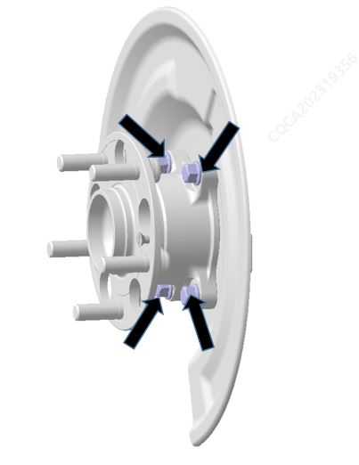

Снятие
1. Снять колесо. Ссылка: Колеса и шины
2. Снять датчик скорости колеса, момент затяжки: 9 ± 1 N.m. Ссылка: Датчик частоты вращения колеса в сборе
3. Снять задний суппорт. Ссылка: Задний тормозной суппорт
Снятие тормозного шланга пропустить.
4. Снять задний тормозной диск. Ссылка Задний тормозной диск
5. Снять узел подшипника задней ступицы. С помощью шестигранной торцевой головки открутить болты подшипника. Крутящий момент: 75 ± 8 N.m.

8. После снятия вышеуказанных деталей снять узел подшипника задней ступицы.
Установка
1. Установка выполняется в порядке, обратном снятию.